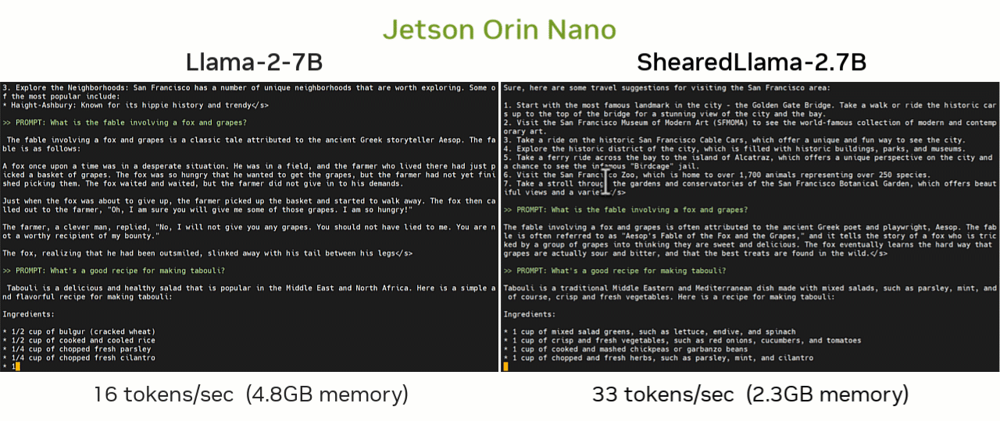

Tutorial - Small Language Models (SLM)
Small Language Models (SLMs) represent a growing class of language models that have <7B parameters - for example StableLM , Phi-2 , and Gemma-2B . Their smaller memory footprint and faster performance make them good candidates for deploying on Jetson Orin Nano. Some are very capable with abilities at a similar level as the larger models, having been trained on high-quality curated datasets.

This tutorial shows how to run optimized SLMs with quantization using the
NanoLLM
library and MLC/TVM backend. You can run these models through tools like
text-generation-webui
and llama.cpp as well, just not as fast - and since the focus of SLMs is reduced computational and memory requirements, here we'll use the most optimized path available. Those shown below have been profiled:
SLM Benchmarks

•   The HuggingFace Open LLM Leaderboard is a collection of multitask benchmarks including reasoning & comprehension, math, coding, history, geography, ect.
•   The model's memory footprint includes 4-bit weights and KV cache at full context length (factor in extra for process overhead, library code, ect)
•   TheChat Modelis the instruction-tuned variant for chatting with in the commands below, as opposed to the base completion model.
Based on user interactions, the recommended models to try are
stabilityai/stablelm-zephyr-3b
and
princeton-nlp/Sheared-LLaMA-2.7B-ShareGPT
, for having output quality on par with Llama-2-7B and well-optimized neural architectures. These models have also been used as the base for various fine-tunes (for example
Nous-Capybara-3B-V1.9
) and mini VLMs. Others may not be particularly coherent.
Chatting with SLMs
What you need
-
One of the following Jetson devices:
Jetson AGX Orin (64GB) Jetson AGX Orin (32GB) Jetson Orin NX (16GB) Jetson Orin Nano (8GB)
-
Running one of the following versions of JetPack :
JetPack 6 (L4T r36.x)
-
NVMe SSD highly recommended for storage speed and space
-
22GBfornano_llmcontainer image -
Space for models (
>5GB)
-
-
Clone and setup
jetson-containers:git clone https://github.com/dusty-nv/jetson-containers bash jetson-containers/install.sh
The
nano_llm.chat
program will automatically download and quantize models from HuggingFace like those listed in the table above:
jetson-containers run $(autotag nano_llm) \
python3 -m nano_llm.chat --api=mlc \
--model princeton-nlp/Sheared-LLaMA-2.7B-ShareGPT
•   For models requiring authentication, use
--env HUGGINGFACE_TOKEN=<YOUR-ACCESS-TOKEN>
•   Press Ctrl+C twice in succession to exit (once will interrupt bot output)
This will enter into interactive mode where you chat back and forth using the keyboard (entering
reset
will clear the chat history)

Automated Prompts
During testing, you can specify prompts on the command-line that will run sequentially:
jetson-containers run $(autotag nano_llm) \
python3 -m nano_llm.chat --api=mlc \
--model stabilityai/stablelm-zephyr-3b \
--max-new-tokens 512 \
--prompt 'hi, how are you?' \
--prompt 'whats the square root of 900?' \
--prompt 'can I get a recipie for french onion soup?'
You can also load JSON files containing prompt sequences, like with
--prompt /data/prompts/qa.json
(the output of which is below)
Results
•   The model responses are with 4-bit quantization, and are truncated to 256 tokens for brevity.
•   These chat questions are from
/data/prompts/qa.json
(found in jetson-containers)
Nemotron Mini
Nemotron-Mini-4B-Instruct is a 4B SLM tuned for on-device deployment, RAG, and function calling and is based on Minitron-4B (pruned and distilled from Nemotron4 15B ). Inference on Jetson is available through HuggingFace Transformers and llama.cpp for quantization. Here's how to run a local OpenAI-compatible server with llama.cpp and 4-bit quantized GGUF:
jetson-containers run $(autotag llama_cpp) \
llama-server \
--hf-repo Obenlia/Nemotron-Mini-4B-Instruct-Q4_K_M-GGUF \
--hf-file nemotron-mini-4b-instruct-q4_k_m.gguf \
--gpu-layers 34 \
--seed 42 \
--host 0.0.0.0 \
--port 8080
For a quick test, you can navigate your browser to
http://JETSON_IP:8080
, connect other clients like
Open WebUI
, or have applications send requests to your server's OpenAI chat completion endpoints (i.e. from
openai-python
, REST, JavaScript, ect)
You can more easily see the performance with the
llama-cli
tool:
jetson-containers run $(autotag llama_cpp) \
llama-cli \
--hf-repo Obenlia/Nemotron-Mini-4B-Instruct-Q4_K_M-GGUF \
--hf-file nemotron-mini-4b-instruct-q4_k_m.gguf \
--gpu-layers 34 \
--seed 42 \
--ignore-eos \
-n 128 \
-p "The meaning to life and the universe is"
# Jetson AGX Orin
llama_print_timings: load time = 1408.27 ms
llama_print_timings: sample time = 70.05 ms / 128 runs ( 0.55 ms per token, 1827.32 tokens per second)
llama_print_timings: prompt eval time = 120.08 ms / 9 tokens ( 13.34 ms per token, 74.95 tokens per second)
llama_print_timings: eval time = 3303.93 ms / 127 runs ( 26.02 ms per token, 38.44 tokens per second)
llama_print_timings: total time = 3597.17 ms / 136 tokens
The model can also be previewed at build.nvidia.com (example client requests for OpenAI API are also there)
Llama 3.2
Meta has released multilingual 1B and 3B SLMs in the latest additions to the Llama family with
Llama-3.2-1B
and
Llama-3.2-3B
. These can be run with INT4 quantization using the latest
MLC
container for Jetson (
dustynv/mlc:0.1.2-r36.3.0
). After having requested access to the models from
Meta
with your HuggingFace API key, you can download, quantize, and benchmark them with these commands:
HUGGINGFACE_KEY=YOUR_API_KEY \
MLC_VERSION=0.1.2 \
jetson-containers/packages/llm/mlc/benchmark.sh \
meta-llama/Llama-3.2-1B
-
Llama-3.2-1BJetson Orin Nano 54.8 tokens/sec, Jetson AGX Orin 163.9 tokens/sec -
Llama-3.2-3BJetson Orin Nano 27.7 tokens/sec, Jetson AGX Orin 80.4 tokens/sec
The Llama-3.2 SLMs use the same core Llama architecture as previous Llama releases (except
tie_word_embeddings=True
), so it is already supported with quantization and full performance on edge devices. Thanks to Meta for continuing to advance open generative AI models with Llama.